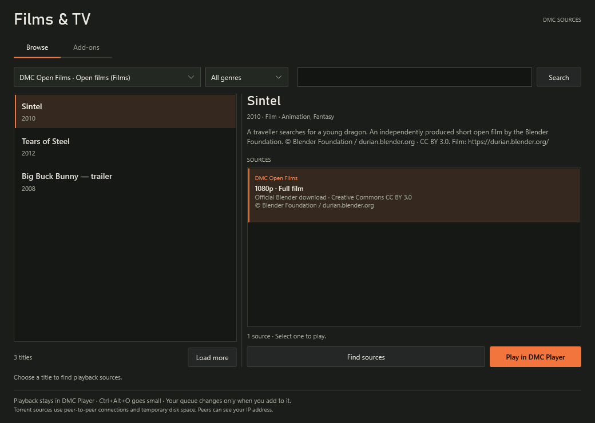

Films, TV and add-ons
Browse films and TV in the player.
Browse titles and episodes, choose a source and watch in the same small window over your game. Available in DMC Player 2.9.
Finding something to watch
Choose a title, then a source.
Open File → Films & TV / add-ons. Choose a catalogue, search for a title, select an episode if needed and pick from the sources your installed add-ons return.
Direct video and torrent sources play through DMC's VLC engine. Go fullscreen, adjust the volume or press Ctrl + Alt + O to keep watching over your game.
Watching leaves your queue alone. Add-on links are resolved when you choose them, rather than saved as a viewing history.
The Films & TV browser
Find your next film in one window.
Browse, choose and play from one native window. TV catalogues add an episode selector; installed providers supply the available sources.

Getting started
Set up your catalogues and sources.
- 1
Try the included films
DMC Open Films includes Sintel, Tears of Steel and a clearly labelled Big Buck Bunny trailer, with Blender credits. Choose a title and press Play.
- 2
Add a catalogue
In the Add-ons tab, choose Add film & TV catalogue for Cinemeta. This adds title information, search and TV episodes. It does not supply streams for those titles.
- 3
Install your source add-ons
Paste a configured HTTPS
manifest.jsonorstremio://link. Check its name and capabilities, then install. Enable, refresh or remove add-ons from the same tab.
Compatible add-ons
Use the source add-ons you choose.
DMC supports the Stremio manifest, catalogue, metadata and stream protocol. Sources can return direct HTTP/HTTPS videos, YouTube videos, or BitTorrent v1 hashes and magnets with a selected video file.
This is DMC's own browser and playback integration. It is not the Torrentio service or a bundled movie and TV torrent index. You provide configured source add-ons and any accounts they require.
A title appearing in a catalogue does not mean a playable source is available. Custom-header sources, DRM, archives, external-player results and unsupported catalogue filters are labelled as unsupported.
Torrent playback
How torrent video playback works.
DMC downloads the selected video into a temporary cache and streams available pieces into its player. Seeking waits for the required pieces. Speed depends on available peers and your connection.
BitTorrent uses peer-to-peer connections. Peers and trackers can see your IP address and torrent activity; uploading can continue while the video is open, including while paused. DMC is not a VPN.
Stop playback, change source, finish the video or close DMC to stop the torrent engine and remove its owned cache. After a crash, inactive cache folders are cleaned when the next torrent starts. The current limits are 32 GiB per video and 64 GiB per torrent.
Use content and sources you are entitled to access. Add-ons do not bypass subscriptions, sign-in or content protection.
Watching with friends
Share a selected video with your room.
Selected add-on video files, including torrents, can use Watch together. The host streams the selected video through the encrypted room; friends receive a temporary room media ID rather than your configured add-on address.
The host needs enough upload bandwidth for each guest. Add-on HLS/DASH playlists are not shared. YouTube results use the existing independent-player synchronisation.
Installed add-on settings are encrypted for your Windows account. Using an add-on contacts its provider with the catalogue, title or episode you request.
Host a watch session